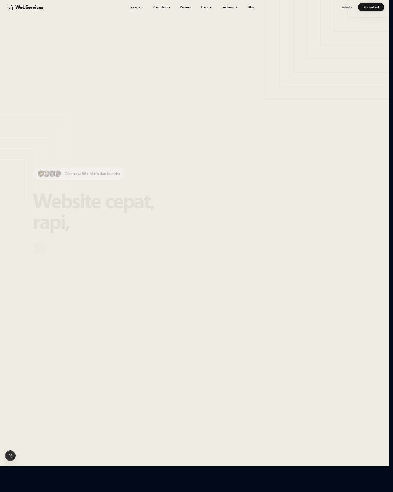
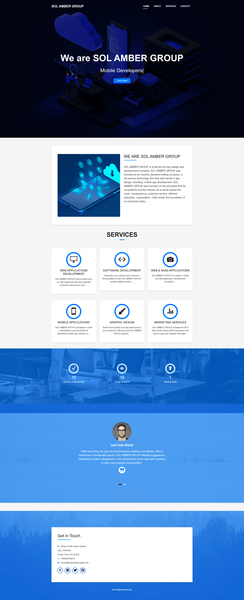
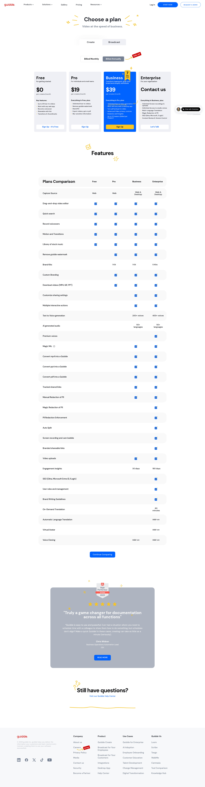
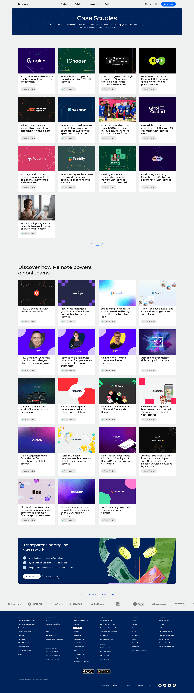

Design Improvement: BuildWebsite Homepage
Homepage sebelumnya rapi, tetapi terlalu banyak ruang kosong di hero, section sekunder terasa sama besar, navbar terlalu padat, dan beberapa bagian memakai copy/visual yang terasa placeholder. Implementasi sekarang memprioritaskan offer UMKM, ritme section yang lebih jelas, nav auth yang lebih natural, portfolio lebih kredibel, dan satu aksen brand emerald.
Current State

Improvement Ideas Implemented
1. Make the hero answer who, outcome, and timeline
Changed the hero from a broad website promise to a sharper UMKM offer with lead and launch-time framing.

[Badge: UMKM leads]
Website profesional untuk UMKM
[siap dapat leads / launch 7-21 hari / mudah dikelola]
Short proof copy
[Konsultasi Gratis] [Lihat Portfolio]
[7-21 hari] [98 score] [CMS]2. Reduce decision load in pricing
Pricing now keeps three tiers, highlights one recommended tier, uses Indonesian copy, and makes the middle plan feel like the guided option.

Starter Profesional Enterprise
Rp 5 juta Rp 15 juta Kustom
basic leads CMS + SEO app/API scope
[CTA] [Terpopuler CTA] [CTA]3. Make portfolio feel like case-study evidence
Portfolio images are now distinct by use case instead of repeating the same image, and the labels explain business outcomes.

Company Profile Dashboard Katalog UMKM Campaign
[visual] [visual] [visual] [visual]
outcome copy tags outcome copy tagsWhat's Working
- The neutral visual direction is already clean and fits a service/agency site.
- The interactive hero mockup gives the page a custom product feel.
- Pricing already had a clear three-tier structure, which is a good base.
- The page has the right conversion sections: hero, services, workflow, portfolio, pricing, proof, CTA, FAQ.